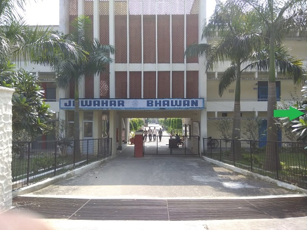

|  |
AboutJawahar Bhawan is one of the oldest and most beautiful bhawans in the institute. Its large and spacious rooms are a abode to talented IITians. Its sprawling and well maintained lawns are the best of all bhawans. Jawahar is the only bhawan to have its own club with a Billiards and Pool table. With sports facilities such as table tennis, volleyball and Badminton courts
and other facilities like 12 hour cyber room, tailor, canteen, barber shop, Photostat shop, fruit vendor etc. Jawahar bhawan 0provides
an ideal environment for the overall development of a true IITian. |